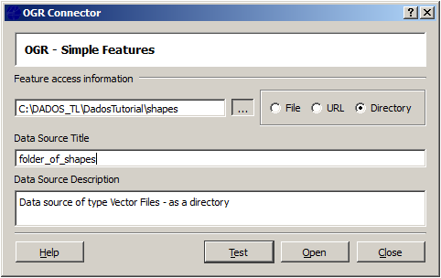
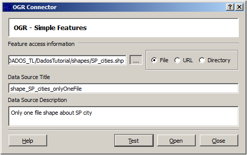
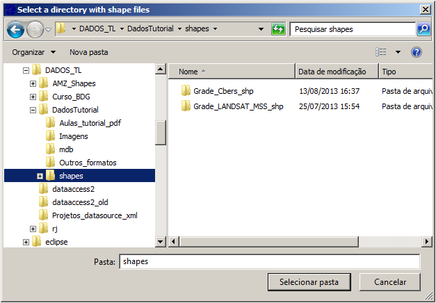

OGR Connector Plugin
The OGR Connector can be defined as a connection with a Directory or with only
one File
and also as URL.
Test will check if
the directory has at least one vector file before open it.
Open will make this connection available at Data Source Selector with
the same title (Data Source Title) specified here, and when selected there will make
available a set of vector files from the directory informed
in Feature access information or a unique file if File is checked.

